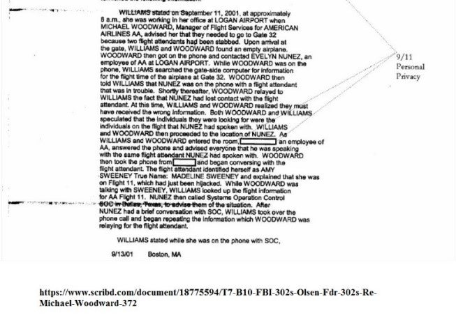
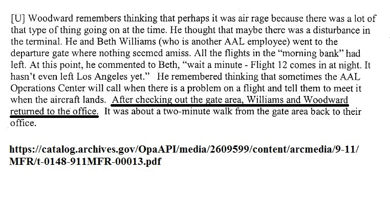
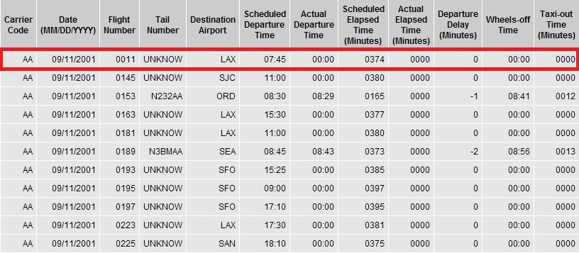

American Airlines 'Flight 11' - “An Independent Analysis”
Saturday, 8 February 2020Introduction
In this analysis I present some of the discrepancies in relation to American Airlines "Flight 11”. (AAL 11). The information in this analysis is in the public domain, and from official sources. My hypothesis has been carefully considered from the telemetry data, Bureau of Transportation Statistics data-base, Air Traffic Control communications, Airline employee witness statements and media reports.
The official narrative of American Airlines ‘Flight 11’
American Airlines ‘Flight 11’ (AAL 11) was a domestic passenger flight that was hijacked by five al-Qaeda members on September 11, 2001, as part of the September 11 attacks. Mohamed Atta deliberately crashed the plane into the North Tower of the World Trade Center in New York City, killing all 92 people aboard and an unknown number in the building's impact zone. The aircraft involved, a Boeing 767-223ER, registration N334AA was flying American Airlines' daily scheduled morning transcontinental service from Logan International Airport in Boston to Los Angeles International Airport in Los Angeles. Fifteen minutes into the flight, the hijackers injured at least three people (possibly killing one), forcibly breached the cockpit, and overpowered the captain and first officer. Atta, an al-Qaeda member and licensed commercial pilot, took over the controls. Air-traffic controllers noticed the flight was in distress when the crew was no longer responding. They realized the flight had been hijacked when Mohamed Atta's announcements for passengers were transmitted to air traffic control. On board, flight attendants Amy Sweeney and Betty Ong contacted American Airlines, and provided information about the hijackers and injuries to passengers and crew.
The Mystery of Gate 32
One of the earliest discrepancies surrounding AAL 11 is the Bureau of Transportation Statistics (BTS) has no record of AAL 11 departing on September 11th 2001, as the BTS should. This discovery was made by Gerard Holmgren. The data is automatically generated and recorded electronically when a flight takes off, so there is not human error involved in this process. To compound matters further, early mainstream media reports suggest that two different gates from which AAL 11 departed from, Gate 32 and Gate 26.
The Boston Globe:
http://archive.boston.com/news/packages/underattack/globe_stories/0912/Crashes_in_NYC_had_grim_origins_at_Logan+.shtml
The Daily Telegraph:
http://www.telegraph.co.uk/news/1340686/At-8.46am-the-world-changed-in-a-moment.html
The Washington Post:
http://www.washingtonpost.com/wp-srv/opinions/articles/sept_11_2001.html
Gate 32 was the scheduled gate, which the flight controller transcripts say, and that is what the 9/11 Commission accepted.
http://www.nytimes.com/2001/10/16/national/16TEXT-FLIGHT11.html?ex=1071378000&en=4b6d66a63bf99b3a&ei=5070
Ground crew accounts in this video clip below, cheif ground crew Donny Bennett recalls after a flight cancellation he was assigned to AAL 11. No gate number is mentioned in his account, although he talks of AAL 11 getting ready for push-off into the taxi way. Another crew member Howard Crabtree recalls attending to ALL 11, while another ramp crew member Richie Sorbello recalls waving-off Pilot John Ogonowski. No gate number is mentioned in their accounts in this video, it is only implied with a video of Gate 32.
Adding further confusion to the discrepancy is flight attendant Betty Ong’s phone call at 8:18 a.m. to the North Carolina Reservations Center, where Betty Ong told Vanessa Minter she was on Flight 12, and then repeated it to Winston Sadler. To compound matters further, Amy Sweeney in her first phone call at 8:30 a.m. said: "Flight 12 at Gate 32 had two flight attendants stabbed." Phone Call Transcription FBI Document:
Sweeney’s phone call message prompted Michael Woodward and his colleague Elizabeth Williams to proceed directly to Gate 32, and according to the FBI’s interview with Williams she said that they found “an empty plane”. See below:
WILLIAMS stated on September 11, 2001, at approximately 8 a.m., she was working in her office at LOGAN AIRPORT when MICHAEL WOODWARD, Manager of Flight Services for AMERICAN AIRLINES AA, advised her that they needed to go to Gate 32 because two flight attendants had been stabbed. Upon arrival at the gate, WILLIAMS and WOODWARD found an empty airplane. WOODWARD then got on the phone and contacted EVELYN NUNEZ, an employee of AA at LOGAN AIRPORT. While WOODWARD was on the phone, WILLIAMS searched the gate-side computer for information for the flight time of the airplane at Gate 32.

{kind=link}
This important detail disclosed by Williams about the “empty plane” at the Gate 32, that both Williams and Woodward observed is omitted in the – 9/11 Commission Memorandum “For the Record” interview with Michael Woodward.

{kind=link}
So according to Elizabeth Williams they found “an empty plane” at Gate 32, yet according to the official narrative AAL 11 was in the air, and had been for 30 minutes, which begs the question why Amy Sweeney said it was at Gate 32 in her phone call? If Elizabeth Williams is telling the truth, and I have no cause to disbelieve her, and if she is not mistaken or misreported, then we may have the key to explain what might have happened to AAL 11.
According to the BTS database entry which lists no wheels-off time for AAL 11 for that day, there has been two explanations for this discrepancy. In the official record, the NTSB say that the data was not reported, in the confusion of the day. The “conspiracy theorists” say that it proves AAL 11 never existed. But the data does not say either of these things. If we just take the data at face-value, rather than assuming it is incorrect, misreported, or falsified, what does the data tell us? It tells us that AAL 11 existed but that it never took off. See below:

{kind=link}
The wheels-off data is recorded automatically and electronically, the fact that the entry exists shows that AAL 11 was scheduled. The fact that the data shows the time as 00:00 indicates that the wheels never moved. This corresponds exactly to what Elizabeth Williams saw and described in her account. The plane was there and had not taken off. If Elizabeth Williams is correct in what she saw, then the entry in the BTS database for AAL 11 exactly matches what she described. So we have two witnesses now who testify that the plane labelled as AAL 11 never took off that morning: Elizabeth Williams, who says it twice, unambiguously, and the NTSB data, which shows that the plane never moved from Gate 32. Another fact is, the 9/11 Commission alleged that some passengers boarded AFTER pushback from gate, which is troubling.
Aircraft Communications Addressing and Reporting System (ACARS) discrepancies
The Aircraft Communications Addressing and Reporting System (ACARS) is a device used to send messages to and from an aircraft. Very similar to text messages and email we use today, Air Traffic Control, the airline itself, and other airplanes can communicate with each other via this "texting" system. ACARS was developed in 1978 and is still used today. Similar to cell phone networks, the ACARS network has remote ground stations installed around the world to route messages from ATC and the airline, to the aircraft depending on its location and vice versa.
According to the official ACARS data contained in the PDF document - 5 AWA 898 Printout between 11:47:30 a.m. (7:47:38 a.m. EST) and 12:00:15 p.m. (8:00:15 a.m. EST) American Airlines Flight 11's ACARS (Downlink) messages sent from the airplane indicates a discrepancy in the identity of the flight number. The flight number is identified as: AA0000. This should not be the case. Note, there is a noticable 9 minute gap in the ACARS data communications when the descrepancy occurs just before AAL 11 is due for take-off at 8:01 a.m. EST. The anomalous flight number AA0000 does not exist, yet lists the correct tail number N334AA. In the other instances, it shows the correct flight number AA0011 and correct tail number N334AA. Why is there a 9 minute gap in the ACARS data?

The ACARS data is sent automatically to the airline, and then the airline forwards the data to the BTS on a regular basis. Ostensibly, no human intervention is involved, thus no human failure is possible, suggesting an airplane with the tail number N334AA took-off without an assigned flight number to it, which was not recorded in the BTS data base? Does this explain the BTS listing for AAL 11’s tail number as “unknown”, indicating that it a different airplane that was at Gate 32 which was not AAL 11, and did not take-off, which was recorded in the BTS data base? This explains the official discrepancies in relation to AAL 11 and answers the confusion why the BTS data-base reported AAL 11 as not taking off, and the account of Amy Sweeney in her first phone call at 8:30 a.m. (“Flight 12 at Gate 32 had two flight attendants stabbed.”) indicating that the airplane was still grounded at Gate 32? Phone Call Transcription FBI Document:
AAL 11 still airborne after it "allegedly" crashed at 8:46 a.m.
In the official narrative it has never been adequately explained why information of AAL 11 still being airborne after it "allegedly” crashed into the North Tower were officially reported. It appears from the Federal Aviation Administration (FAA) and North American Aerospace Defense Command (NORAD) communications recordings that AAL 11's last known coordinates were (40'38N 074'03W) which locates AAL 11 - 5.77 miles past the North Tower according to the ATC communications, and heading towards the Washington, DC. area.

In this short video I made from the FAA and NORAD communication recordings I include the relevant communication segments:
Official Explanations for this Evidence:
In the aftermath of 9/11 the scramble of Langley Fighters has been described by the Defence Department as a response to the hijacking of AAL 77, or United 93 (UAL 93), or a combination of the two. Yet the report of AAL 11 heading towards Washington, DC. as the reason for the Langley Fighter Jets to be scrambled does not reflect what is captured in the taped conversations at NEADS or in taped conversations at FAA centres, on chat logs compiled at NEADS and NORAD. In reality at 9:24 a.m. when the fighter jets were scrambled from Langley, NEADS wasn’t even aware that AAL 77 or UAL 93 were hijacked. Why did the Defence Department lie about this? Shortly after 9/11, a time-line provided by senior Defence Department officials to CNN will state, NORAD orders jets scrambled from Langley in order to “head to intercept” AAL 77.
Major General Larry Arnold, the CONR commander, will give a different explanation. He will tell the 9/11 Commission, “we launched the aircraft out of Langley to put them over top of Washington DC, not in response to AAL 77, but really to put them in a position in case UAL 93 were to head that way.” Major Nasypany will tell the 9/11 Commission that the real reason for the Langley jets are scrambled and directed toward Baltimore area is to position them between the reportedly southbound AAL 11 and Washington, DC, as a “barrier cap”. It seems NORAD deliberately misled Congress and the 9/11 Commission by hiding the fact that the Langley scramble takes place in response to the report that AAL 11 still airborne.
Emergency Transmitter Locator (ELT) went off over two minutes before AAL 11 allegedly crashed into the World Trade Center?
Another discrepancy in the official data supports the case that AAL 11 didn't crash into the North Tower is due to the timing of the Emergency Transmitter Locator (ELT) going-off over two minutes before AAL 11 crashed at 8:46 a.m.
The Emergency Locator Transmitters (ELT) are emergency transmitters that are carried aboard most general aviation aircraft in the U.S. In the event of an aircraft accident, these devices are designed to transmit a distress signal on 121.5 and 243.0 MHz frequencies. ELTs are mounted aft in the airplane, and designed to be triggered upon impact or may be manually activated using the remote switch and control panel indicator in the cockpit. Activation of the ELT triggers an audio alert, and 406-MHz ELTs transmit GPS position for search and rescue. [Emergency Locator Transmitters – AOPA].
According to the 9/11 Commission, AAL 11 crashed into the North Tower at 8:46 a.m. [The 9/11 Commission Report: Final Report of the National Commission on Terrorist Attacks Upon the United States. New York: W. W. Norton & Company, 2004, p. 7.] However, two and a half minutes earlier, David Bottiglia, an air traffic controller at the FAA's New York Center, received an important message from one of the planes in the airspace he was monitoring. At 8:44 a.m. the pilot of U.S. Airways Flight 583 told Bottiglia: "I just picked up an ELT on 121.5. It was brief, but it went off." (121.5 megahertz is an emergency frequency that ELTs are designed to transmit their distress signals on.) A minute later, about 90 second before AAL 11 crashed into the WTC another plane in the New York Center's airspace reported the same thing. The pilot of Delta Airlines Flight 2433 told Bottiglia: "We picked up that ELT, too. But it's very faint." [Transcript of United Airlines Flight 175] -
According to author Lynn Spencer, "several" facilities picked up the ELT signal around this time.
[Lynn Spencer, Touching History: The Untold Story of the Drama That Unfolded in the Skies Over America on 9/11. New York: Free Press, 2008, p. 50.].
Peter McCloskey, a traffic management coordinator at the New York Center, later recalled that the ELT had gone off "in the vicinity of Lower Manhattan." [Memorandum for the Record: Federal Aviation Administration (FAA) New York Air Route Center Interview with Peter McCloskey." 9/11 Commission, October 1, 2003].
And, around the time AAL 11 crashed into the WTC, a participant in an FAA teleconference stated, "We got a report of an ELT in the area that (the radar track for Flight 11) was in." (Before it disappeared from radar screens, the track for AAL 11 had indicated the plane was about 20 miles from New York's JFK International Airport). [9/11 Air Traffic Control Transcript]
Additionally, while an ELT went off two minutes before AAL 11 crashed into the WTC, it appears that no ELT went off at the time of the crash itself at 8:46 a.m. as it should have done. This is analogous to United Airlines “Flight 175” (UAL 175) which “allegedly” crashed into the South Tower at 9:03 a.m. where an ELT signal was activated and transmitted in the New York area four minutes before at 8:59 a.m. The pilot of 'Flight 583', who had reported the ELT signal before the North Tower was struck, told David Bottiglia at the New York Center that he had noticed another ELT going off. The pilot said, "I hate to keep burdening you with this stuff, but now we're picking up another ELT on 21.5." Again the same as the previous crash with AAL 11, with the ELT being activated minutes before UAL 175 crashed into the South Tower, and no ELT being activated at the time of the crash itself. Furthermore, there is no evidence cited of an ELT reported with United Airlines ‘Flight 93' and there is no evidence cited that an ELT was activated for American Airlines 'Flight 77', thus indicating none of the four airplanes listed as being involved on 9/11 crashed at any of the "alleged" targets named in the official 9/11 narrative.
The ELT activated over Ann Arbor, Michigan at 9:53 a.m.
An ELT was broadcast/transmitted over Ann Arbor, MI. at 13:53 p.m. PST, 9:53 a.m. EST. This ELT has not been "officially" related to any of the four alleged airplanes listed as involved on 9/11. However according to this evidence it indicates that an airplane crashed in Ann Arbor at 9:53 a.m. but has never been accounted for as any airplane crash taking place. Note: in the communication between the two controllers it appears there is an audio drop-out, or editing done, just after when the controller say "wait that doesn't make sense", and the other controller replies "yes it does, it...(audio drops-out or is edited)". The controller seems to go on to explain something to the other contoller, however there's an audio drop-out or edit towards the end? Why was this information removed? What was being concealed about this ELT occurrence?
There is no evidence that an airplane crash took place in Ann Arbor, MI. at 9:53 a.m. This has never been reported officially as happening, however the incident of the ELT being activated was officially reported.

Does this indicate that ELTs were being broadcast/transmitted which were part of the many military training exercises taking place on 9/11, where it has been alleged, simulated airplane hijackings were in progress during the morning on 9/11. The Ann Arbor, MI. ELT could explain why ELT's were being broadcast too early in the case of AAL 11 and UAL 175 ahead of their "alleged" crashes?
The official ELT evidence alone implies that none of the two airplanes crashed at their targets. The evidence of ELT signals being broadcast/transmitted in the New York area before the World Trade Center towers were hit raises serious questions about the official narrative of the 9/11 attacks. If ELTs had been activated, this should have been at the times the airplanes crashed into the towers, not several minutes beforehand. But while a number of Air Traffic Controllers (ATC) mentioned the ELT signals in their interviews with the 9/11 Commission, the 9/11 Commission Report offered no explanation for this anomalous evidence. For example, where the sources of the ELT signals originated from? Or were they from somewhere else? And were the transmitters themselves ever found? After all, according to the FAA, "In most installations the [ELT] is attached to the aircraft structure as far as practicable in the fuselage; or in the tail surface, in such a manner that damage to the beacon will be minimized in the event of a crash impact."
Summary & Conclusion
The mystery surrounding the gate discrepancy could suggest that AAL 11 did not take-off, as reflected in the BTS data-base, which recorded AAL 11 as not leaving the ground. Also ACARS data indicates a discrepancy with a non-existent flight number which happens leading up to AAL 11's "alleged" take-off, which was clearly recorded in the ACARS telemetry data "downlink" from the airplane. There is no reason to suggest why this should happen. Furthermore these two pieces of evidence cited could indicate that perhaps another airplane actually took-off instead, which could explain the discrepancy regarding the gate departures. To support this is the evidence of Amy Sweeney in her first phone call at 8:30 a.m. who said: “Flight 12 at Gate 32 had two flight attendants stabbed.” Phone Call Transcription FBI Document:
This prompted Woodward and Williams to check Gate 32, where they observed an "empty airplane" at the gate, although strangely this was omitted in Woodward's account in the - 9/11 Commission Memorandum Report. WHY? Moreover, Sweeney's phone call confirms that she referred to 'Flight 12' and Gate 32. Does this further support the discrepancy with the flight number which is reflected in the ACARS data leading up to the take-off? Additionally, evidence suggests that an airplane identifying itself as AAL 11 with the (correct) tail number: N334AA was 5.77 miles past the North Tower after it was allegedly meant to have crashed into the North Tower at 8:46 a.m. according to Air Traffic Control's last known "official" latitude-longitude coordinates. The official ELT evidence alone does not support AAL 11 crashing into the North Tower, because it was activated/broadcast too early before the crash itself, thus indicating it was not AAL 11 involved in the event at the North Tower, which the NORAD communication recordings support, indicating that AAL 11 was heading towards Washington, DC. area. (My speculation to land at Reagan National Airport where UAL 93 landed at 10:28 a.m. Interestingly, Reagan National Airport was the only airport to close for 23 days after 9/11). This is also reinforced by reports of a airplane heading towards Washington, DC. which passed-by the White House, heading from the direction that AAL 11 would have been flying towards. An added note is, none of airplanes bound for Los Angeles (LAX) were listed on the arrivals board, and even more strangely none of the passenger's relatives were at the airport to meet any of the passengers, which could be expected, even taking into to account of what unfolded.
On a final note...
I have suspected for a long time that the four airplanes allegedly involved on 9/11 where part of a "real world" simulated hijacking, which was most likely part of the war-games exercises happening on 9/11. I consider none of the airplanes which were named by the 9/11 Commission crashed into their alleged targets. Something else took place at each event that did not involve the four airplanes. The evidence does not support the official narrative and I feel the evidence cited here in this blog-post goes someway to support my suspicions.
I will always keep an open mind and allowance of new evidence which will warrant further enquiry, which may form a new updated hypothesis in the future.
Thank you for reading and caring!